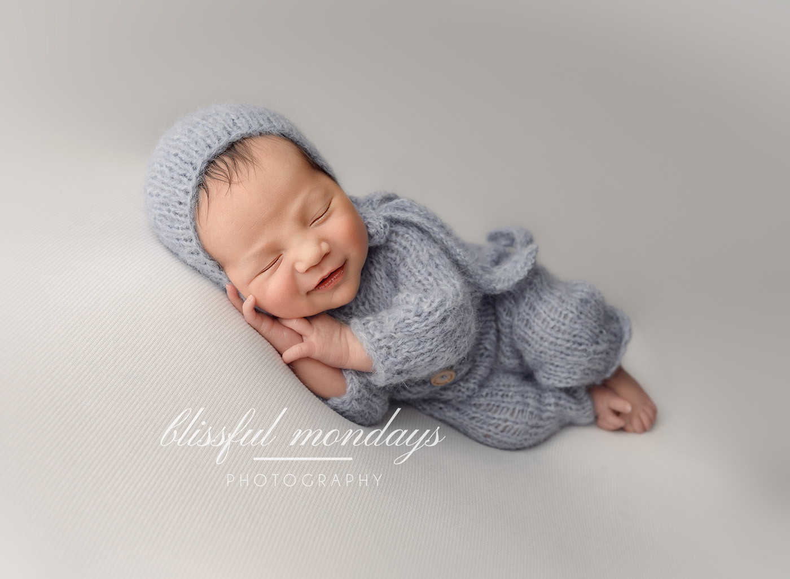
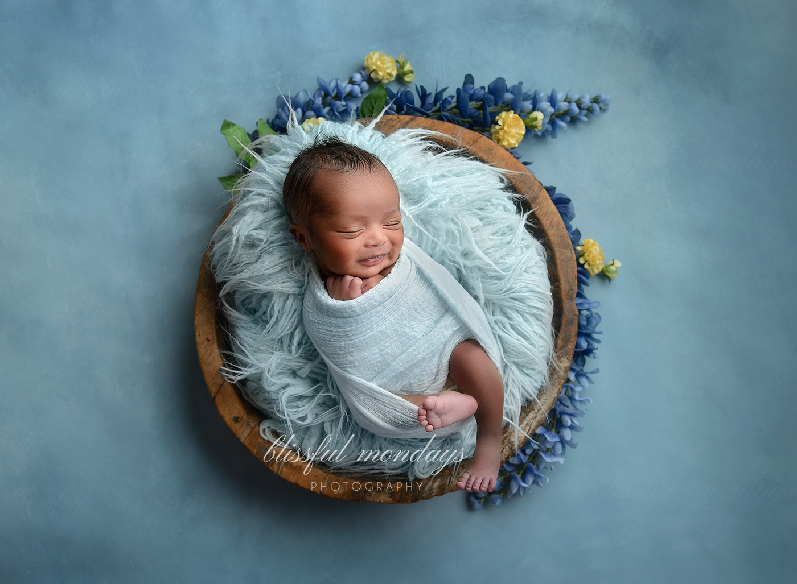
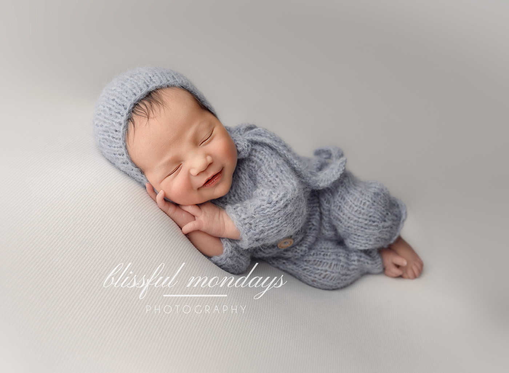
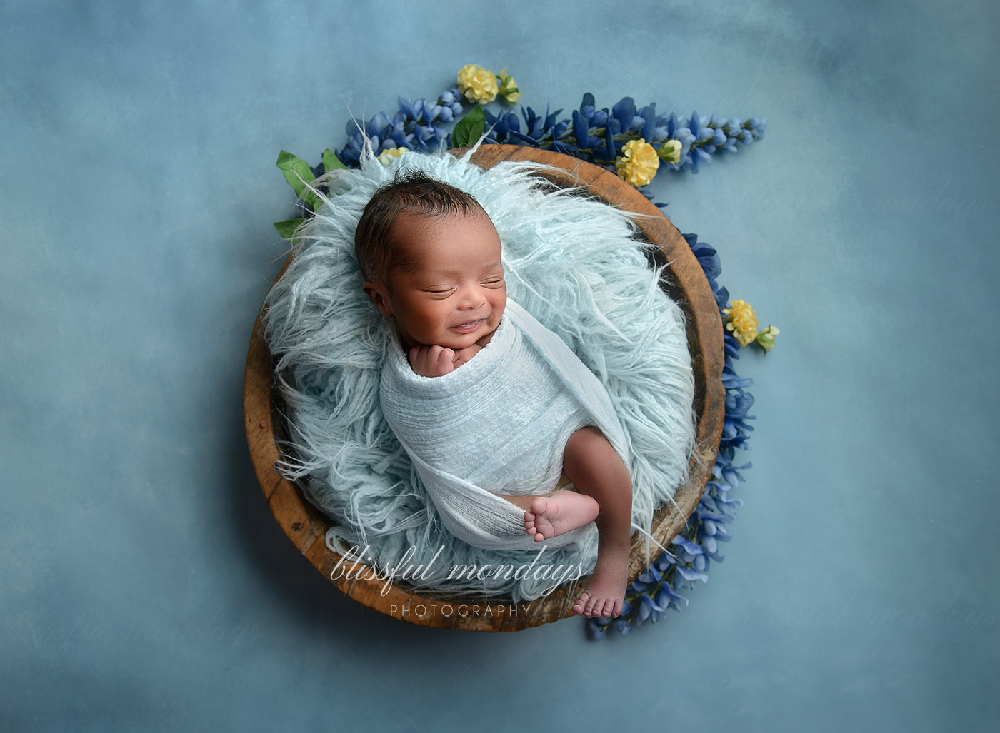
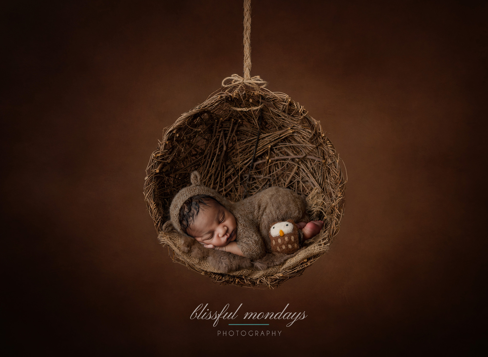
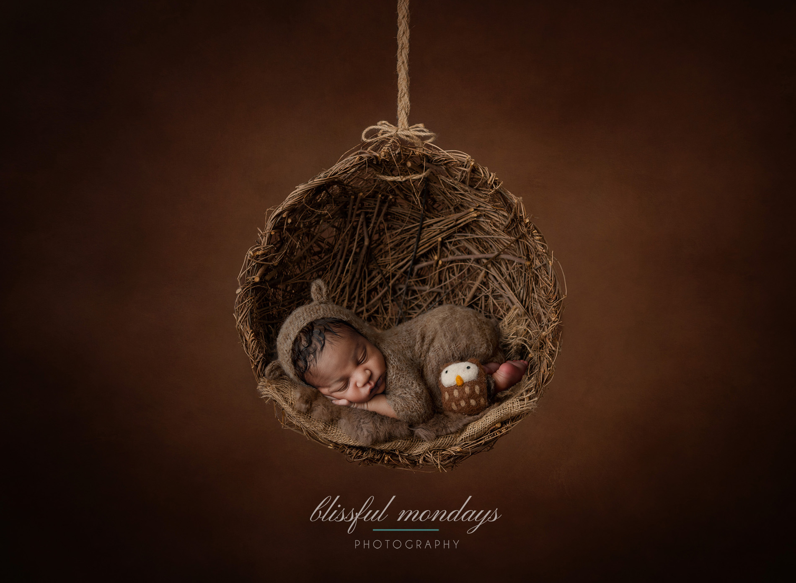

AMY WEST
NEWBORN PHOTOGRAPHER
The first thing anyone should know about me is that my family is the most aspect of my life. I have always had the desire to capture my family through the years in candid and formal portraits. I treasure every moment with them. There have been so many times that I have been brought back to an otherwise forgotten memory by revisiting old photos. When my mother died a few years ago I took note that the first thing I did after the initial shock subsided was scour the house for pictures of her. It was all I had left to remember her by. Those images of my mother are now priceless treasures as are all the images I have capture of my husband and children together.
Watching my children grow has been my greatest gift in life. I treasure every moment with them. Naturally, this appreciation for their milestones and stages in life led to a fervent desire to photograph everything I could. I have four children; two are adults and two are still pre-teens. They keep me busy with dance classes, school activities, and music lessons. My husband of 26 years is fighting stage 4 pancreatic cancer currently. He was diagnosed about a year and a half ago. Doctors do not expect him to live more than a few years. In fact, he was told he had about a year left in September of 2021. Looking after him has occupied some of my time, but thankfully, up till now, he has been fairly self-sufficient.
When I am not looking after the kids or my husband, I am either working on school assignments, doing volunteer work for my son's elementary school memory book committee, or working on tasks in my role as the Marketing and Communications Director of my local photographer's association, OPPA.
I chose to focus on children and newborns in my photography studio because I understand the value of capturing fleeting moments of our children. These are such precious times and I want to help as many people as I can capture this time of innocence and joy. I know that these families will look back on these images for many years to come and treasure them. It is my hope that they are then passed down from generation to generation as a tribute to the ancestors of future generations.


 



 
